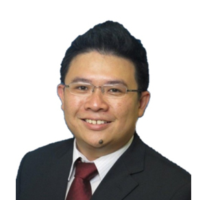

Doctors
-
1 Farrer Park Station Road, #15-05 Connexion, Singapore 217562
Dr. Sebastian Chua
Anaesthesiology
Apicare Pain Clinic
-
1 Farrer Park Station Road, #15-05 Connexion, Singapore 217562
Dr. Wilson Tray
Anaesthesiology
Apicare Pain Clinic
-
290 Orchard Road #16-12 Paragon Medical (Tower 1 via lift Lobby (F) Singapore 238859)
Dr. Anthony Tang
Breast Specialist
The Breast Clinic
-
Parkway East Medical Centre 319 Joo Chiat Place, #02-05, Singapore 427989
Dr. Chong Chee Keong
Breast Specialist
Maven Surgery
-

3 Mount Elizabeth #17-18 Mount Elizabeth Medical Centre Singapore 228510
Dr. Ang Teck Kee
Cardiologist
Ace Cardiology Clinic Pte Ltd
-
3 Mount Elizabeth, #07-04 Medical Centre, Singapore 228510
Dr. Lee Chee Wan
Cardiologist
Cardiac Centre International
-
3 Mount Elizabeth #04-02. Mount Elizabeth Medical Centre Singapore 228510.
Dr. Lim Ing Han
Cardiologist
Lim Ing Han Cardiology Clinic
-

Paragon #17-10 Lift Lobby F 290 Orchard Road Singapore 238859
Dr. Lim Tai Tian
Cardiologist
Dr TT Lim Cardiology Clinic
-
Mount Elizabeth Novena Specialist Centre, 38 Irrawaddy Road #06-39 Singapore 329563
Dr. Ooi Yau Wei
Cardiologist
Sozo Cardiology Clinic